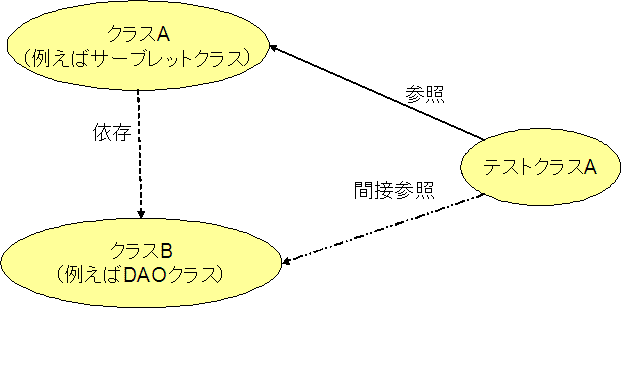
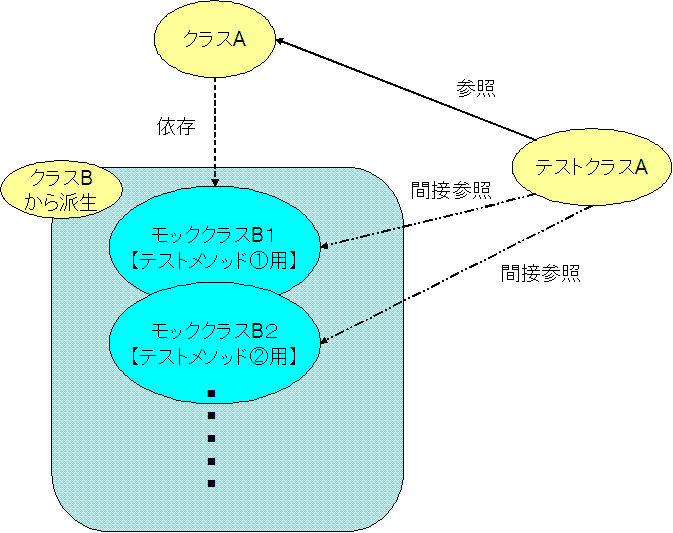

テストケース作成時のワンポイントアドバイス
テストケースを作成するにあたり、躓く可能性があるポイントを見ていきましょう。
例外の扱い方
以下のクラスに対して、テストクラスを作成してください。
public class SampleUtil {
/**
* String型数値を渡すとintの値を返す.
*
* @param intStr 数字の文字列
* @return intとしての値
* @see java.lang.Integer#parseInt(String)
*/
public static int getIntValue(String intStr) {
return Integer.parseInt(intStr);
}
}
できましたでしょうか？疑問に思ったことはありませんでしたか？
例えば、文字列「A」などを引数に渡した場合には、ドキュメントに書いていない NumberFormatException が発生します。
そもそも、「A」などの文字列を引数に渡した場合にメソッドから例外が投げられるのが正しいのでしょうか？
それとも、数字に出来ない場合には固定で 0 を返すべきだったのでしょうか？
こういう振る舞いについて疑問に思ったら設計書を確認してください。
設計時にはまったく考えていなかったことがテストでわかることもあります。
この問題で例外が発生することが正しいと仮定すると、下記のコメントのようになります。
public class SampleUtil {
/**
* 数字を渡すとintの値を返す.
*
* @param intStr 数字の文字列
* @return intとしての値
* @throws NumberFormatException 文字列が構文解析可能な整数型を含まない場合
* @see java.lang.Integer#parseInt(String)
*/
public static int getIntValue(String intStr) {
return Integer.parseInt(intStr);
}
}
こうしておけば、NumberFormatException が発生することが正しい動作だとわかり、
テスト対象とすることが出来ます。
また、テストメソッドは以下のようになると思います。
@Test
public void testGetIntValue1() {
int result = SampleUtil.getIntValue("1");
assertEquals(1, result);
}
@Test
public void testGetIntValueA() {
try {
int result = SampleUtil.getIntValue("A");
fail("例外が発生しなかった");
} catch(NumberFormatException e) {
} catch(Exception e) {
fail("異なる例外が発生");
}
}
@Test
public void testGetIntValueNotIntValue() {
try {
int result = SampleUtil.getIntValue("1.1");
fail("例外が発生しなかった");
} catch(NumberFormatException e) {
} catch(Exception e) {
fail("異なる例外が発生");
}
}
@Test
public void testGetIntValueEmpty() {
try {
int result = SampleUtil.getIntValue("");
fail("例外が発生しなかった");
} catch(NumberFormatException e) {
} catch(Exception e) {
fail("異なる例外が発生");
}
}
ここでのポイントは、
- 通り道で失敗したら"fail"を書く
- 例外時のケーススタディーをどの程度想定して書くか
という２点です。
「例外時のケーススタディーをどの程度想定して書くか」という点についてもう少し詳しく説明します。
「文字列が構文解析可能な整数型を含まない場合」という例外に対して
今回は「A」と「1.1」「空文字」の３ケースを行いましたが、
人によっては「A」だけをテストすれば十分であると考えるかもしれません。
ただし、今回のようにAPIを呼んでいる場合などで、この値だったらどういう結果になるのか？
と疑問に思った場合には、
振る舞いが明確でない入力値に対する結果を確認するためにテストを行うという考え方は重要です。
例えば、さすがに「A」だったら例外だろうけど、ひょっとして「1.1」だったら切捨てが行われるのでは？と
疑問に思った場合には上記のようにテストに含めてもいいと思います。
もちろんテストケースを増やした分だけ時間もかかってしまいますので、
どこまでテストするのかというのは、時間とのおりあいをつけて考える必要があります。
テストでは、ロジックをみてその全ての条件を確認するだけではなく、
この値は想定していないのではないか？などと考えるのもバグを炙り出す上では重要になってきます。
その結果として、メソッドの正しさが保証されるわけです。
テストできないコードとは
テストを行うにあたり、実装を修正しなければならないケースもでてきます。
以下のようなメソッドのテストを考えてみましょう。
package test.junit.sample;
public class SampleUtil {
/**
* システムの現在日付のlong値に引数で渡された値を追加する.
* @param value 加算する値
* @return 計算結果
*/
public long addToSystemTimestamp (long value) {
return System.currentTimeMillis() + value;
}
}
テストメソッドのイメージが湧きましたでしょうか？
このテストのように、テストの度に値が変わってしまうような場合は、下記のように実装を変更することで
テストしやすくなります。
public class SampleUtil {
/**
* 日付のlong値に引数で渡された値を追加する.
*
* @param timeMillis 日付のlong値
* @param value
* 加算する値
* @return 計算結果
*/
public long addToTimeMillis(long timeMillis, long value) {
return timeMillis + value;
}
}
結論としては、元のコードのようにセンスがないコードはテストできません。
上記の例のように、もしテストが書けない状況になった場合は、実装の変更を検討してみてください。
Mockとは
テストを行うときに、仮のクラスを作らないとテストできない場合がでてきます。その "仮のクラス" の総称を "Mock" といいます。
どんなときに使わなければならなくなるかと言うと、
- 実オブジェクトは決定されていない振る舞いを持つ。
- 実オブジェクトは設定するのが難しい。
- 実オブジェクトはトリガーするのが難しい振る舞いを持つ。
- 実オブジェクトは遅い。
- 実オブジェクトはユーザインタフェースである。
- 実オブジェクトはコールバックを使う。
- 実オブジェクトはまだ存在しない。
などの時に用いるものだと一般的には言われています。
上記だとまだイメージがつかみにくいと思うので、下記の図をみてみましょう。

上記図のように例えばサーブレットをテストするクラスがあった場合、そのサーブレットから呼ばれる DAO のクラスができあがっていれば、
Mock を作らずに上記図のように素直にテストケースを書いていけるかと思います。
しかしながら、もし DAO のクラスがまだ作っれていない、
もしくは DAO のクラスで故意に例外を発生させたい状況がでてくるかと思います。
そのような場合は、下記の図のように DAO の Mock クラスを作ってサーブレットをテストするようにテストケースを書きます。

つまり、テストをするのに必要な条件として、書く必要があるクラスのことを”Mock"と呼ぶと覚えておいてください
private コンストラクタのテスト
Mock を使ってもテストできないコードというのもまだあります。
private コンストラクタです。
通常 JUnit では、private メソッドを直接テストすることはありません。
外部に公開されている public メソッドのテストの中で、private メソッドを間接的にテストします。
しかし、private コンストラクタは別です。
private コンストラクタというのは、外部から勝手に new されて
自由にオブジェクトを作らせないようにするために記述されるので、もちろんテストケースからも呼び出すことは
出来ず、従って普通の方法でテストすることは出来ません。
そこでテストクラスに次のようなメソッドを作成し、このメソッドを利用して、コンストラクタが private であることを確認します。
/**
* <pre>
* 引数で指定されたクラスのデフォルトコンストラクタのアクセス修飾子が
* private であることを確認します.
* </pre>
*
* @param targetClass
* 確認対象のクラス
*/
public static void asertPrivateConstructor(Class<?> targetClass) {
try {
Constructor<?> constructor = targetClass
.getDeclaredConstructor((Class[]) null);
int modifiers = constructor.getModifiers();
if (!Modifier.isPrivate(modifiers)) {
throw new AssertionFailedError(
"The default constructor is not private of class："
+ targetClass.getName());
} else {
constructor.setAccessible(true);
constructor.newInstance((Object[]) null);
}
} catch (Exception e) {
e.printStackTrace();
throw new AssertionFailedError(
"There is no default constructor of class："
+ targetClass.getName());
}
}
使い方はこのような感じです
/**
* <pre>
* 【概要】
* ・BBSUtil クラスのコンストラクタが private であること.
* </pre>
*/
@Test
public void testXXXUtilHasPrivateConstructor() {
asertPrivateConstructor(BBSUtil.class);
}
このメソッドでは、リフレクションという機構を使用しています。
リフレクションは通常のアプリケーションで使用することは滅多にありませんし、
むしろ使ってはいけません。
Struts や Spring のようなフレームワークを作る際に使用します。
従って、現段階でリフレクションを理解する必要はありません。上記のようなメソッドを使うことで
private コンストラクタであることを確かめられるということだけ覚えておいてください。
©日本インサイトテクノロジー株式会社
というのもあります。
このような場合は、リフレクションや Virtual Mock Object などを使い無理やりテストをしたりします。